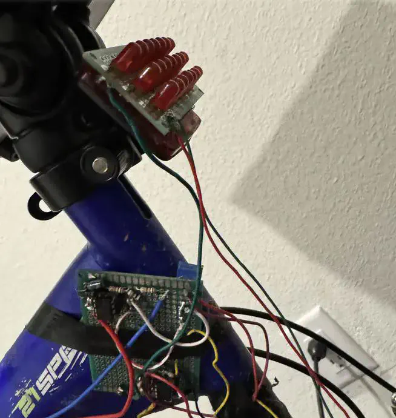
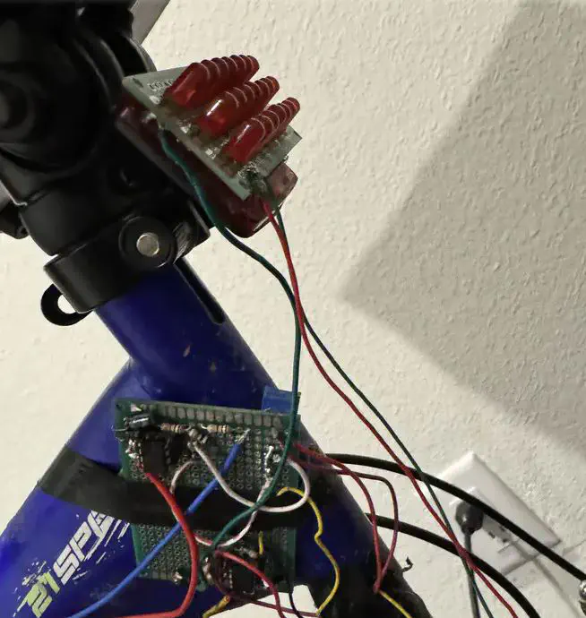

Bike Lights powered by NE555 timers
 

Overview
Made a NE555 powered lighting setup for my bicycle with turn signals and a brake light. This is a practical safety upgrade for night riding and a lot during bring-up (yes, a couple of 555s were sacrificed).
Highlights
- Independent left/right blinkers plus a bright brake light
- Analog timing with NE555; tidy wiring mounted on the frame
- Improved visibility and safety for evening rides
NE555
Analog Electronics
Prototyping
Bike Safety